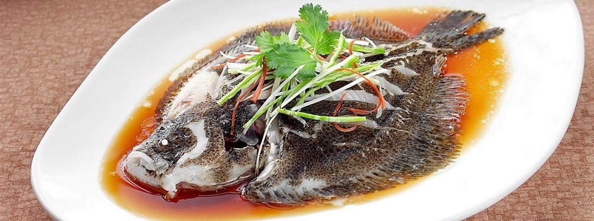
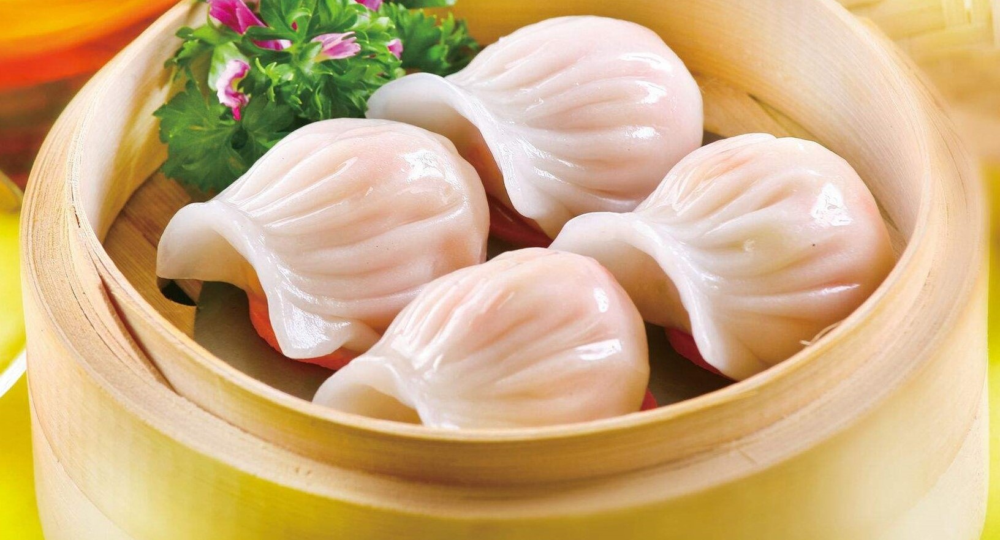
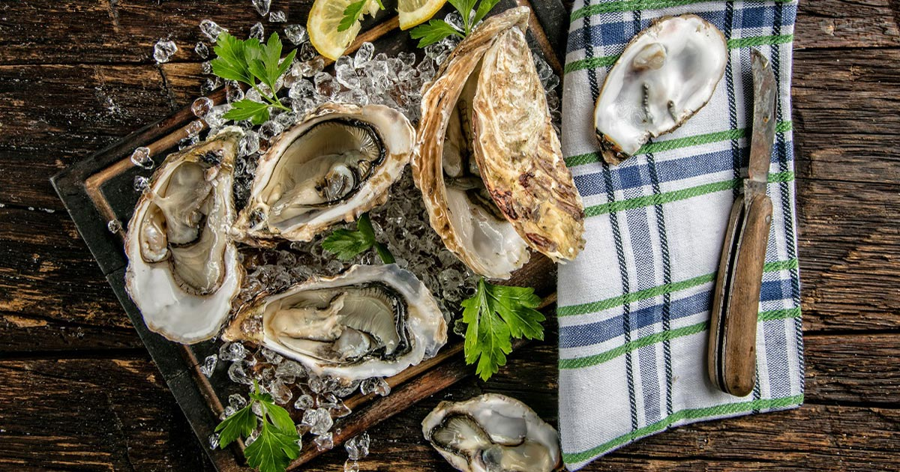
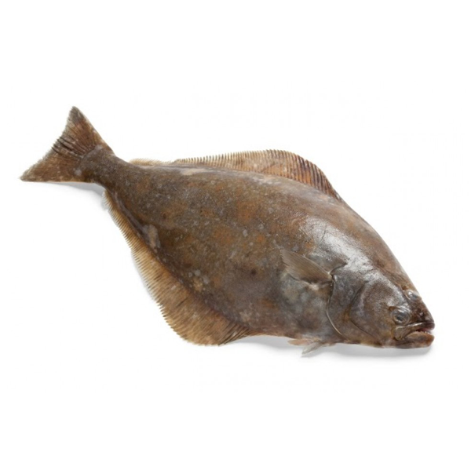
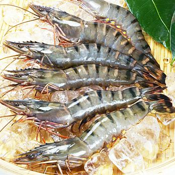
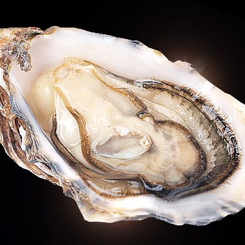
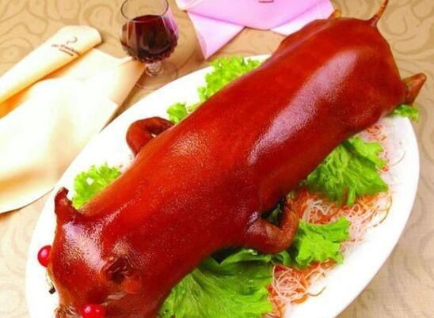
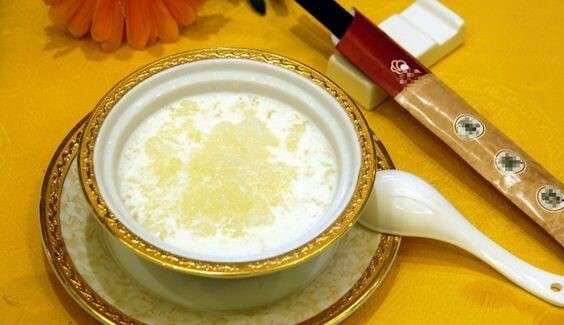
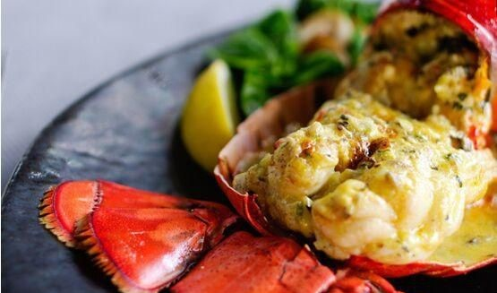

多宝鱼营养丰富，富含Ω-3脂肪酸、蛋白质、维生素A、维生素C、钙和铁等

明虾是海水虾，肉质肥厚，味道鲜美，富含蛋白质。滋阴健胃，适于多种烹调法制菜。

生蚝富含B族维生素、牛磺酸和钙、磷、铁、锌等营养成分，可以提高机体免疫力，降血脂、血压。

早在西周时代已列为“八珍”之一，那时称为“炮豚”，即烤乳猪。在《齐民要术》一书中也记有烤乳猪的制作方法， 并说它“色同琥珀，又类真金，入口则消，壮若凌雪，含浆膏润，特异凡常也”。清康熙时，曾为宫廷名菜，成为“满汉全席”中的一道主要菜肴。 直到民国初期山东还经营此菜。后在广州和上海盛行，成为最著名的广东名菜。现今“烧乳猪”为广州和港澳地区许多著名菜馆的首席名菜，深受中外顾客欢迎。

官燕意为赠送达官贵人的燕窝。这种燕窝的质量最佳，是燕窝中的上品。 味道香滑可口，有生精养血、滋阴补肾、强胃健脾等功效。对人体组织生长、细胞再生，以及由细胞引发的免疫功能均有促进作用。 加之燕窝还含有大量的粘蛋白、糖蛋白、钙、磷等多种天然营养成份，有润肺燥、滋肾阴、补虚损的功效， 能增强人体对疾病的抵抗力，有助于抵抗伤风、咳嗽和感冒。

龙王夜宴是广东省传统的特色名菜，属于粤菜系。此菜虾肉嫩爽鲜香,可根据不同调料变化口味。 龙虾入沸水煮5分钟，取肉留头、尾；将龙虾肉、石斑肉、螺片、带子用味精、糖、料酒、胡椒粉略腌； 用七成热油炒虾肉1分钟后加姜末、蒜耳，稍后取出；虾肉连同虾头、尾，依次摆放盘中，淋明油并佐以芥末和酱油伴食。